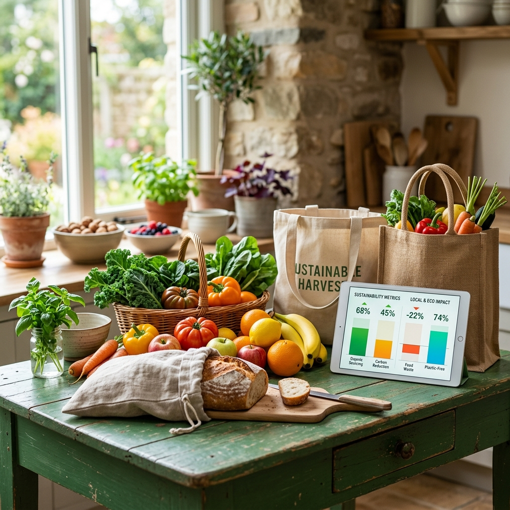
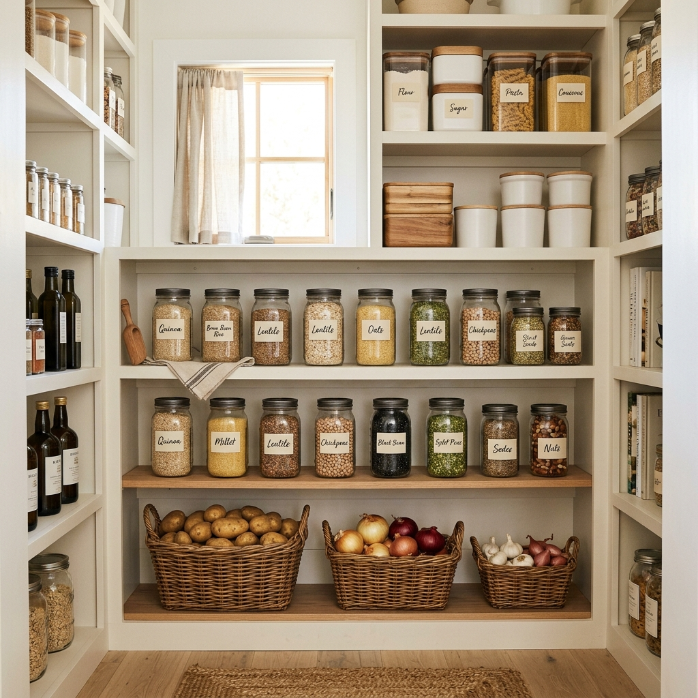
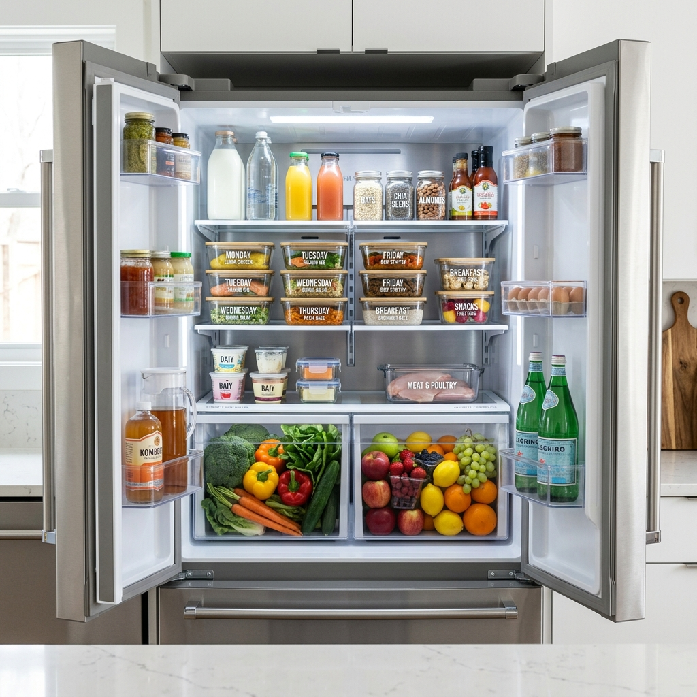

Complete Food Waste Prevention & Preservation Guide

1. The Global Food Waste Challenge
Approximately 1.3 billion tons—nearly one-third of all food produced globally for human consumption—gets lost or wasted each year. In household kitchens, simple adjustments to purchasing habits and storage routines can divert hundreds of kilograms of organic waste from landfills annually while saving significant grocery dollars.
2. Proper Food Storage & Preservation Guide
Storing produce under optimal temperature and humidity conditions significantly extends freshness and prevents premature spoilage.

Pantry Best Practices
Keep potatoes, onions, garlic, and squash in cool, dry, dark cabinets. Always store potatoes and onions in separate containers—onions emit ethylene gas which causes potatoes to sprout rapidly.

Refrigerator Temperature Zones
Maintain your refrigerator temperature at or below 4°C (40°F). Store raw meats on lower shelves to prevent drips, dairy products on upper shelves for steady temperature, and leafy greens in crisping drawers.
Freezer Preservation Techniques
Freeze surplus bread, chopped vegetables, berries, and leftover soups in airtight container portions. Label containers with dates. Freezing acts as a natural pause button, keeping food safe indefinitely.
3. Decoding Food Expiration Date Labels
Confusion over date label terminology leads to unnecessary disposal of perfectly safe food products. Click each label type below to learn what it actually means:
This date indicates when a product will be at peak flavor and quality. It is NOT a safety deadline. Products are safe to consume after this date if properly stored and showing no signs of spoilage (bad odor, mold, or unusual texture).
The last date recommended by manufacturers for peak quality. The only exception is infant formula, where "Use By" represents a safety deadline. For standard groceries, evaluate food visually and by smell before deciding to discard.
A retail inventory management date meant for store staff to track shelf rotation. It is not intended for consumers. Food remains fresh and safe to eat for days or even weeks past the "Sell By" date if kept refrigerated.